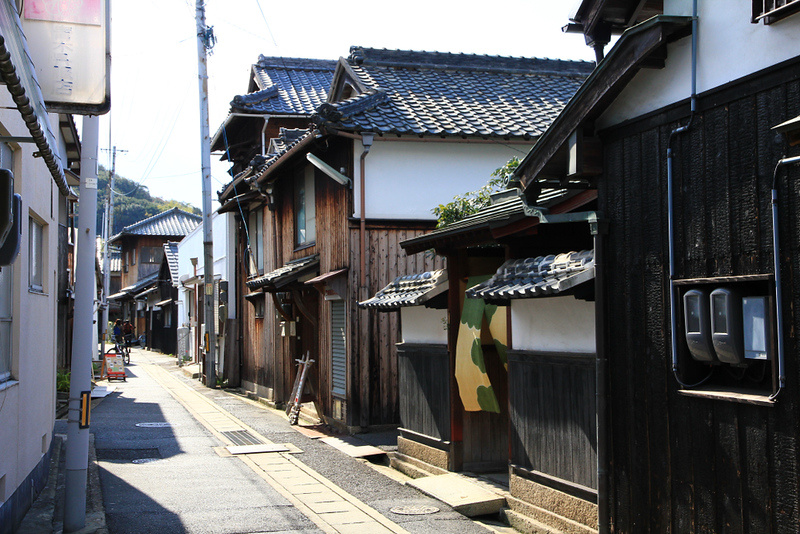

Visiting Naoshima in August is less about checking landmarks off a list and more about embracing a slower, almost meditative rhythm. The island rewards patience. You wander between concrete masterpieces designed by Tadao Ando, discover installations tucked into quiet corners, and encounter Yayoi Kusama's famous polka-dotted pumpkins standing against endless sea views.
The experience is deeply sensory. Sunlight reflects off white walls, ocean breezes drift through open spaces, and every path seems designed to encourage reflection rather than urgency.
Summer on the Island
August is the warmest month of the year in Naoshima. Daily temperatures frequently reach between 31°C and 34°C (88°F–93°F), accompanied by high humidity that can make midday exploration challenging.
The best strategy is simple: start early.
Morning hours offer softer light, cooler temperatures, and a quieter atmosphere around the island's most famous sites. During the hottest part of the day — from approximately 11:00 AM to 3:00 PM — it is wise to retreat into air-conditioned museums and galleries before continuing your exploration later in the afternoon.
Visitors Should Come Prepared With
- UV-protection clothing
- Sunscreen
- A wide-brim hat or cap
- Comfortable walking shoes
- A reusable water bottle
Hydration is essential, especially if you plan to cycle around the island.
Planning Ahead Matters
Unlike many destinations where spontaneity works well, Naoshima rewards preparation.
The island's most celebrated attraction, the Chichu Art Museum, requires advance online reservations. Other major museums and exhibitions may also have limited-entry systems during busy periods, making early booking highly recommended.
Before traveling, check the official Benesse Art Site calendar for opening schedules, special exhibitions, and reservation requirements.
One important detail many first-time visitors overlook: most of Naoshima's museums and Art House Project locations are closed on Mondays. Planning around this schedule can make a significant difference in how much you are able to see.
Getting Around

Despite its peaceful atmosphere, Naoshima is larger and hillier than many visitors expect.
An electric bicycle quickly becomes one of the best investments of the trip. E-bike rentals are conveniently available directly across from the Miyanoura Ferry Terminal and provide an easy way to move between museums, beaches, villages, and viewpoints without exhausting yourself in the summer heat.
The freedom to stop whenever something catches your eye is part of what makes exploring Naoshima so memorable.
Getting There
Reaching Naoshima is surprisingly straightforward.
Regular ferries operate from Uno Port, with crossings taking approximately 20 minutes.
Travelers arriving from Shikoku can board ferries from Takamatsu Port, which take roughly 50 minutes.
For those looking to save time, high-speed passenger boats also depart from Takamatsu and reach the island in about 25 minutes.
The journey itself feels like a transition — from city life into something slower, quieter, and more intentional.
Where to Stay
While Naoshima can be visited as a day trip, staying overnight transforms the experience.
The most immersive option is Benesse House Park, where guests enjoy the rare privilege of experiencing portions of the museum grounds after day visitors have departed. The atmosphere becomes remarkably tranquil, allowing the island's art and architecture to be appreciated without crowds.
Travelers seeking a more affordable or rustic stay may prefer Naoshima Rest House "Tsutsuji-so" Lodge, known for its unique seaside accommodations and relaxed atmosphere.
An overnight stay also allows visitors to witness one of Naoshima's greatest luxuries: the silence that settles over the island after the last ferry leaves.
Final Thoughts
Naoshima in August is not the easiest version of the island. The heat is intense, the sun is relentless, and planning ahead is essential.
Yet these conditions also encourage the very mindset that makes Naoshima special. You slow down. You linger longer in museums. You seek shade beneath trees overlooking the sea. You allow yourself to move at the island's pace.
And somewhere between a Tadao Ando concrete wall, a Yayoi Kusama sculpture, and the shimmering waters of the Seto Inland Sea, you realize that Naoshima asks nothing of you except your attention.
In return, it offers one of Japan's most quietly unforgettable travel experiences.
Affiliate disclosure: This article may contain affiliate links. If you purchase through one of these links, we may receive a commission at no additional cost to you. See our Affiliate Disclosure for details.